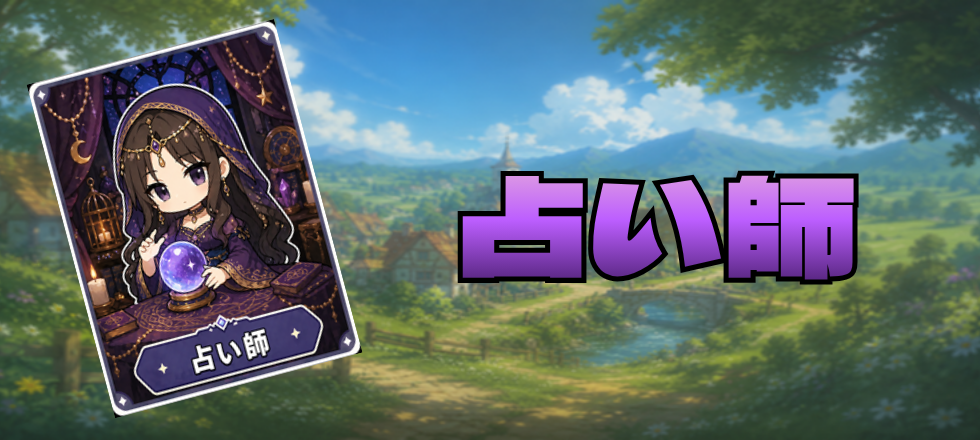
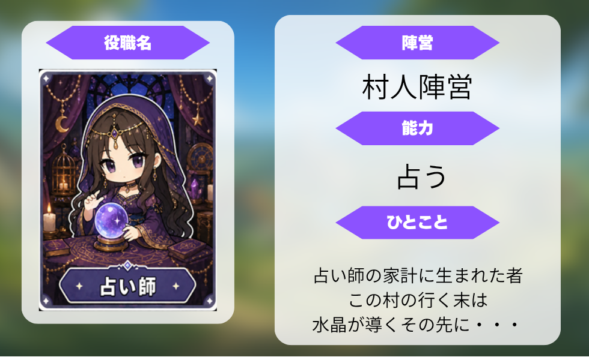

ここでは役職「占い師」とおすすめ行動を紹介します。

占い師は能力で占った人が人狼か確認することができます。
発動方法は占いたい人の近くでスニーク（しゃがむこと）することです。
人狼なら「黒」、人狼じゃないなら「白」と表示されます。狂人は「白」と表示されるので気を付けましょう。確白は盤面上大切な役なので死なないように立ち回りましょう。
まずは占いを発動しましょう。占った相手が黒ならその人を倒せと命令しましょう。
占い師の言うことを聞かないヤツは怪しいので断罪しましょう。
占った人が白なら人狼の択は狭まります。でも狂人の可能性もあるので完全に信頼するのはやめましょう。
占い師は生きてるだけでもえらいので進行役として行動しましょう。